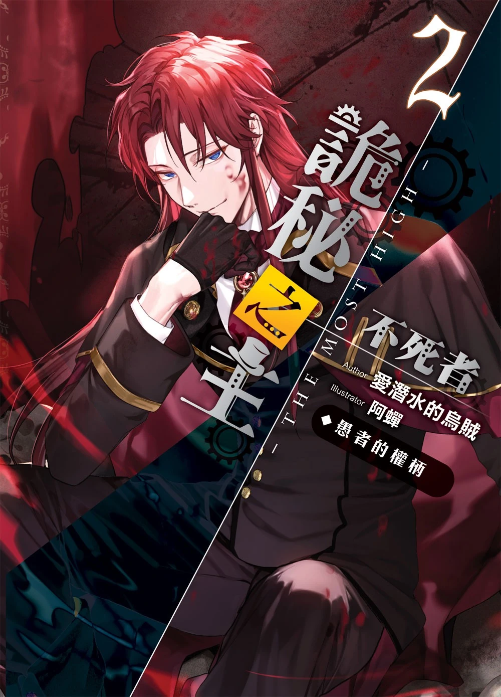

Overview
The tall-as-a-mountain Blood Emperor who wore a red cape with ‘His’ eyes being abnormally crazy, containing almost zero reasoning.
Azik Eggers's Letter, Book 1, chapter 502
Alista Tudor, the Blood Emperor, was the ancestor of the Tudor Family. "He" was born after the Third Epoch, and before the first Solomon Empire.6 "He" ruled the Tudor-Trunsoest United Empire alongside the Night Emperor, and later ruled the Tudor Empire after the fracture of the United Empire.
Appearance
Normal Appearance: "He" appeared to be around 30 years old. "He" was draped in a deep red ceremonial robe and wore an iron-black crown. "He" had long hair with a faint flickering red glow ("His" hair used to be brown, but underwent a change as "He" switched to Red Priest pathway). His facial features were sharp, as if carved by a knife. His lips gave off an unyielding and unwavering impression. He also had a very prominent nose as well as a pair of blue eyes filled to the brim with insanity and cruelty ("His" eyes would turn iron-black when he used Red Priest abilities). 7
Death Mark:
A figure which seemed to be engulfed in an intense inferno, with almost colorless flames covering its entire body. It felt as if the figure was abnormally huge, like a mountain peak. Within the nearly intangible flames, the figure revealed long, blood-colored hair. Its sculpted face was marred by decay and pus, and its bones gleamed with a metallic luster. Its iron-black eyes seemed rusted, emitting a sinister blood-red glow. Yellowish “magma” dripped from the figure’s body, quickly extinguished by the pale-white spring water.1Book 2, chapter 353
Initial fusion with the Mirrored Original Creator: A figure drapped in rust-colored long hair, wearing full-body white iron, with rigid and hollow iron-black eyes, and a high-bridged nose, seemingly cast from the same mold as Blood Emperor Alista Tudor, only with many opposite details in color.2Book 2, chapter 1108
History
Fourth Epoch
Alista Tudor was among the various people who saw the Second Blasphemy Slate8 and later served as a high-ranking noble in the Solomon Empire, ranked beneath Zoroast, Abraham, Zaratul and on par with Augustus, Castiya.9 Together with Trunsoest who was also a Sequence 2 Beyonder of the Black Emperor Pathway, "He" received the support of the six Orthodox deities to remove the Black Emperor. "He" and Trunsoest then both became Prince of Abolition of the Black Emperor pathway and co-ruled the Tudor-Trunsoest United Empire.
During "His" rule as the consul of the United Empire, Alista Tudor secretly built the mausoleums across present-day Loen - unbeknownst to the churches10 - as part of the apotheosis ritual to become Sequence 0: Black Emperor,11 with Bethel Abraham's assistance.12 13 However, "His" advancement plan was thwarted by the return of a revived Solomon; meanwhile, Trunsoest was endorsed by the Six Deities to switch to Justiciar Pathway.14 With the aid from Adam, Amon,15 and the nobles' combined efforts3Book 2, chapter 433, "He" entrapped and killed all 3 Sequence 1 Angels of the Red Priest Pathway: the Red Angel Medici, Sauron, and Einhorn16 in the underground structure in present-day Backlund17 18 to become Sequence 0: Red Priest, turning half-mad as the cost of switching to a non-neighbouring pathway.19
- The event of killing Medici, Sauron, and Einhorn was part of the war meant for "His" Apotheosis Ritual. There were also subsequent events.20 21 22
As the Blood Emperor, "He" founded the Tudor Empire, with the Amon Family, Abraham Family,23 Jacob Family, Antigonus Family, and Tamara Family as "His" chief supporters,24 25 and participated in the War of the Four Emperors. At one point, Azik Eggers met "Him" in person and lost consciousness from the half-crazed Blood Emperor's glance.
During the 500 year period after founding the Tudor Empire and the War of the Four Emperors, Tudor and Cheek consummated within the Special Mirror World created by Bethel Abraham. This action also further awakened the Primordial God Almighty in "Them". This was because, in the First Epoch, The Primordial God Almighty, who accommodated the City of Calamity, hid one part of "His" resurrection arrangement around the City of Calamity and the two pathways of Demoness and Red Priest: When the Demoness combines with the Red Priest, "He" will become the Trinity, in the City of Calamity, within the Demoness and the Red Priest, simultaneously resurrecting, ultimately forming a whole, returning in the mirror. But "He" perished too early, and "His" arrangements were not as expected. The City of Calamity was sealed in the Western Continent by the Celestial Worthy of Heaven and Earth for Blessings, preventing "Him" from quickly becoming the Trinity; in addition, there was also another change on the City of Calamity's side. "His" consciousness revived in the Primordial Demoness and Alista Tudor, but without the City of Calamity's resonance and linkage, that consciousness grew very slowly, and was suppressed and controlled by the two.
- "Their" union also gave birth to Krismona and Judith.
Moreover, the place the Primordial Demoness and Alista Tudor consummated was not the ordinary mirror world, but the Special Mirror World created by Bethel Abraham, who had accommodated the Door Uniqueness and all three Sequence 1 Beyonder Characteristics. The Oldest One's body of both male and female, plus the power of the two direct Pillars belonging to the Oldest One, gave birth to the Mirrored Original Creator, but "His" consciousness was very weak, like all newborn infants. This gave the Primordial Demoness and Alista Tudor a chance to merge with the Mirrored Original Creator, with "Them" each bearing the feminine and masculine side respectively, and then use this to control the City of Calamity. But the other Deities found out, and the War of the Four Emperor started, causing "Their" failure.
In the last moment, Tudor wanted to forcibly complete the merger, using this to pull all other Sefirot from the Western Continent, dragging the entire world to die, waiting for the Creator's symbolic manifestation in death. However, the Primordial Demoness deemed "His" final decision too crazy and decided to kill "Him" at the moment then resurrect "Him" later; she temporarily cooperated with Salinger in hunting "Him" down, dealing "Him" the critical blow and then Salinger completed "His" life culling.4Book 2, chapter 110726
"His" Fall in Fourth Epoch Trier caused the capital to sink underground.5Book 2, chapter 356 After "His" demise, the Red Priest Uniqueness fell into Salinger's hands; the Sauron Family and Einhorn Family also reclaimed their Beyonder Characteristics.3 The mirrored Alista Tudor still existed in the Mirror World on the Blue Avenger, the masculine aspect of the Mirrored Original Creator initially fused with "Him" was safeguarded by the Primordial Demoness, "His" corpse remained in the Fourth Epoch Trier, and "His" remnant soul lingered in the River of Eternal Darkness after being sent there by Salinger. Alongside the Beyonder characteristics stored in the Blue Avenger's treasury, these were all part of his resurrection plans; however, the Primordial Demoness deliberately cursed the destiny of "His" descendants, save "Her" own child, to necessitate "His" reliance on "Her" later.27
Fifth Epoch
Lord of Mysteries
Pound Family gained the title of viscount after their contribution to Loen in the Battle of the Violated Oath, owning Unit 8 in Williams Street situated above the underground ruins of the Hall of Consul of Tudor-Trunsoest United Empire and Blood Emperor's Red Priest ascension site, where the Evil Spirit Sauron-Einhorn-Medici had remained sealed. Pound Family fell into decline, and Rafter Pound sold Unit 8 in Williams Street to Millet Carter, who hired Sherlock Moriarty to investigate the underground structure beneath his new house. Sherlock and Sharron later encountered the Evil Spirit Sauron-Einhorn-Medici who tried to persuade them to help with his release and advised them to keep Rafter Pound alive, revealing that Rafter Pound was a descendant of Tudor Family and the Blood Emperor had left quite a number of good things which require the blood of "His" descendants to access them.
The mausoleums that "He" had left in Loen were repurposed by George Augustus III in his Apotheosis Ritual.
Circle of Inevitability
Lumian Lee encountered the Blood Emperor's remnant spirit in the Samaritan Women's Spring of Underground Trier.1 Under "His" commands, other evil spirits of various pathways attempted to drag Lumian into the spring, which almost succeeded until a strange pale-while hand emerged from the depths of the spring and persisted in dragging "Him" back. Before "He" completely disappeared into the spring, "His" madness materialized and "He" shot out the aura from "His" eyes at Lumian, which merged with the corroded mark left by the Blood Earth Ore on Lumian's right hand.28
When Fors Wall explained the nature of the mysterious mark on Lumian's right hand, she cited hearsay similar to what Evil Spirit Sauron-Einhorn-Medici had stated, that only the ones with Tudor Family's bloodline could unlock numerous hidden treasures the Blood Emperor had left behind in the 4th Epoch Trier. Fors also mentioned another hearsay that the Blood Emperor had nearly entombed all the deities who participated in the war alongside "Him".5
Lumian eventually learned from the Armored Shadow, who originated from the Western Continent, that:
The Blood Son of Heaven disrupted the netherworld, and the Underworld Daoist sacrificed himself to enter the river.
Armored Shadow's response in Chinese, Book 2, chapter 373
From Franca's translation, Lumian theorized that the Blood Emperor's remnant spirit was able to traverse Franca's homeland, the Samaritan Women's Spring, and even Fourth Epoch Trier via the distributary of a mysterious river from Franca's homeland which had infiltrated their world during the War of the Four Emperors; then a local High-Sequence Beyonder from the domains of Death and the Underworld chose to immerse himself in the river in order to harness its power fully and seal away the Blood Emperor's remnant spirit that had brought chaos to the Underworld over there.
Finally exploring the Blue Avenger, Lumian encountered a Historical Projection of Alista Tudor in a scene seemingly belonging to the Tudor Empire era. Alista Tudor's Projection compelled Lumian to approach "Him", which was actually a cover-up for an antique full-length mirror that contained the mirrored Alista Tudor, and Lumian's reflection onto the mirror initiated a possession from the mirrored Alista Tudor, but the Underworld Daoist's mark brought him a brief moment of clarity, enough to roll away from the mirror and escape the full relfection, thusly evading the full possession. Violent pounding against the mirror from inside followed, which came to a halt after a while. Lumian concluded that the Projection had been triggered by a resonance between "His" residual aura within Lumian and the mirror or what hidden inside that mirror, which must be the Blood Emperor's resurrection setup.29
When Lumian used the Blood Emperor ritual contract to search for the remaining Weather Warlock characteristic in the ruins of Bansy, at the bottom of the well where the Malevolent Dragon was sealed, he unwittingly entered a mirror world that contained a silver full-length mirror connected to the mirror on the Blue Avenger, and thusly encountered the mirrored Alista Tudor. The battle was initially dominated by the mirrored Alista Tudor, and when it was about to reach climax, a dark shadow, later revealed to be the Primordial Demoness, infiltrated this mirror world and dissuaded the mirrored Alista Tudor from finishing the battle. Both the mirror inside this mirror world and the mirror on the Blue Avenger were shattered during this battle; following the battle, a deep purple, hurricane-like light surged from the Blue Avenger and rapidly headed eastward, which was a living Weather Warlock characteristic in the form of a purple-flamed giant bird that Alista Tudor had extracted to provide for Lumian's advancement. After gaining the acknowledgement from the living characteristic and its submission as the bird's challenge served as a hidden ritual condition to make up for the foundation missing from switching pathways, Lumian prayed to Mr. Fool to shatter the characteristic and cleanse it of Alista Tudor's imprint.30
It was theorized by Fors Wall that Julie had saved Lumian during the fight in Morora because Cheek wanted him to serve as the basis for Tudor to revive. This was later proven correct on The Day of Many Disasters, when Lumian Lee was forced to fuse with the Mirrored Original Creator's masculine side (the Alista Tudor in white armor) and feminine side (the Primordial Demoness in black bone dress), along with the mirrored Alista Tudor (black armor) and a split-off personality from the Primordial Demoness (white bone dress), a Sequence 1 Beyonder Characteristic of Conqueror and one of Apocalypse. The Primordial God Almighty's consciousness also almost revived on him, manifesting as a chaos face, before ultimately being stopped by The Fool's and Amon's interference. From then on, Lumian Lee gained the symbolism of both masculine and feminine aspects of the Mirrored Original Creator.31
After The Apocalypse, Alista Tudor now existed as a personality inside Lumian Lee's Dream, as the priest overseeing a Trier-styled cathedral.32
Trivia
- Alista Tudor handled the workplace relationships among his subordinates with force. This was why the Abraham, Tamara, Antigonus, Jacob, and Amon families were able to coexist.33
- Via Bethel Abraham, Antigonus, and Amon, he could use the Kings-of-Angel-level abilities of the Lord of Mysteries pathways.34
- According to Albus Medici, Alista Tudor left behind so many problems because he was the symbol of calamity.35
- The presence of Alista Tudor's soul allowed Lumian Lee to satisfy the requirements of the Red Priest ritual during the latter's ascension as a Dual-Pathway True Gods.36
- When it comes to utilizing the powers from the Sefirot during the War of the Four Emperors, regarding Trunsoest who already accommodated the Uniqueness of the Justiciar pathway, Alista Tudor and Cheek who completed the initial merger with the masculine and feminine aspects of the Mirrored Original Creator, Alista Tudor and Cheek were more or less equal, better than Trunsoest, but there was no qualitative difference. However, when Alista Tudor went mad in the end, it was no longer the case; he would outdo others.37 It was no exaggeration that he was capable of burying other gods involved in the war, even to the point of reviving the Original Creator.38
- To use the Chaos Sea's five Pathways at the level of Sequence 0, Alista Tudor must use the Mirrored Original Creator. However, before "His" fall, the Mirrored Original Creator was not yet fully controlled by "Him".39
- Alista Tudor utilized a bit of Mirrored Original Creator's special symbolisms and the City of Calamity's corruption in himself to summon powers from the Sefirot in the Western Continent.40
References
- Book 2, chapter 353.
- Book 2, chapter 1108.
- Book 2, chapter 433.
- Book 2, chapter 1107.
- Book 2, chapter 356.
- Author's WeChat post tyrant_formulas, part 19.
- Appearance Description of 4th Epoch characters.
- Book 1, chapter 1036.
- Book 1, chapter 1065.
- Book 1, chapter 1029.
- Book 1, chapter 1086.
- Book 1, chapter 1112.
- Author's WeChat post chained_formulas, part 31.
- Book 1, chapter 743.
- Book 1, chapter 1276.
- Book 1, chapter 964.
- Book 1, chapter 735.
- Book 1, chapter 736.
- Book 1, chapter 714.
- Author's WeChat post coi, part 63.
- Author's WeChat post mod, part 65.
- Author's WeChat post gof, part 31.
- Book 1, chapter 336.
- Book 1, chapter 359.
- Book 1, chapter 440.
- Author's WeChat post ph, part 42.
- Book 2, chapter 1106.
- Book 1, chapter 354.
- Book 2, chapter 743.
- Book 2, chapter 1080.
- Book 2, chapter 1108.
- Book 2, chapter 1179.
- 书评区沙雕问题答案.
- Author's WeChat post gof, part 38.
- Book 2, chapter 829.
- Author's WeChat post mother_formulas, part 40.
- Author's WeChat post sun_abilities, part 14.
- Author's WeChat post giant_formulas, part 12.
- Author's WeChat post gof, part 9.
- Author's WeChat post mod, part 63.
Source
Article adapted from the Alista Tudor article on the Lord of the Mysteries Fandom wiki (CC BY-SA). Chapter numbers follow that article's citation format.
Image gallery
